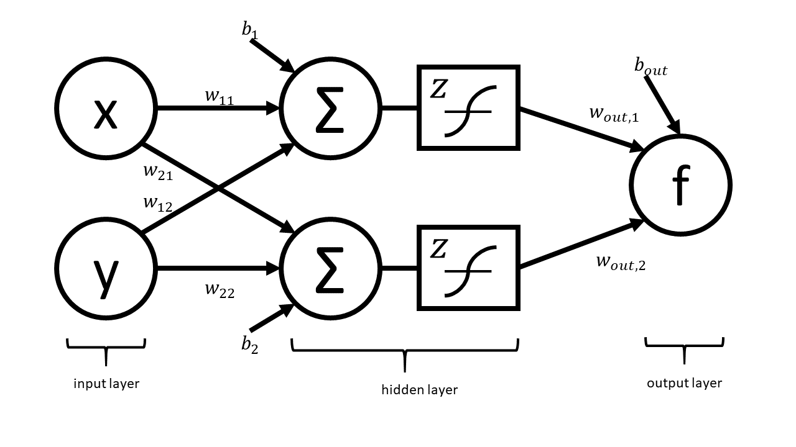

Module 2: Deeper Into Forward Mode¶
As we introduced in Unit 1, the forward mode of automatic differentiation computes derviatives by decomposing functions into a series of elementary operations. We can explicitly compute the derivative of each of these elementary operations, allowing us to combine them using the chain rule to accurately compute the derivative of our function. As we have seen, in the computational graph, nodes represent inputs and outputs of elementary operations, and the edges correspond to the elementary operations that join these nodes. The inputs to our functions become the first nodes in our graph. For each subsequent node, we can consider an evaluation and derivative up to that point in the graph, allowing us to consider the computation as a series of elementary traces.
The Computational Trace and Practice with the Visualization Tool¶
At each step in the graph, we can consider the current function value and derivative up to that node. Using the chain rule, we compute the derivative at a particular node from the elementary operation that created that node and the value and derivative of the input node to that elementary operation. Let’s return to our example from our first demo. In unit 1, we formed the corresponding computational graph. Now let’s use that graph to write the computational table.
| Trace | Elementary Function | Current Value | Elementary Function Derivative | Derivative Evaluated at x |
|---|---|---|---|---|
| \(x_1\) | x, input | \(\frac{\pi}{16}\) | 1 | 1 |
| \(x_2\) | \(4x_1\) | \(\frac{\pi}{4}\) | \(4\dot{x_1}\) | 4 |
| \(x_3\) | \(\sin(x_2)\) | \(\frac{\sqrt{2}}{2}\) | \(\cos(x_2)\dot{x_2}\) | \(2\sqrt{2}\) |
| \(x_4\) | \(x_3^2\) | \(\frac{1}{2}\) | \(2x_3\dot{x_3}\) | 4 |
| \(x_5\) | \(-2x_4\) | 1 | :math:`-2dot{x_4} | -8 |
| \(x_6\) | \(exp(x_5)\) | \(\frac{1}{e}\) | \(exp(x_5)\dot{x_5}\) | :math:`frac{-8}{e} |
| \(x_7\) | \(-x_6\) | :math:`frac{-1}{e} | \(-\dot{x_6}\) | \(\frac{8}{e}\) |
| \(x_8\) | \(x_1 + x_7\) | \(\frac{\pi}{16}-\frac{1}{e}\) | \(\dot{x_1}+\dot{x_7}\) | \(1+\frac{8}{e}\) |
The visualization tool which we installed in the first unit also computes the computational table for forward mode. Let’s first consider a function of a single input.
Notice how the computational trace corresponds to the nodes on the graph and the edges linking these nodes. Note that the choices of labels for the traces might be different than the table we wrote by hand - compare the labels for the nodes in the graph.
Now let’s consider an example with multiple inputs. Observe that the computed derivative is now the gradient vector. Instead of maintaining an evaluation trace of a scalar derivative for a single input, we instead have a trace of the gradient for multiple inputs. Note that this is done by assigning a seed vector to each input. We’ll discuss more about what this means automatic differentiation is computing in the next section.
More Theory¶
The Multivariate Chain Rule¶
As we saw in the example above, we can also use automatic differentiation to find the gradient of functions with multiple inputs. From our multivariate calculus class, recall that we can find the derivative of a function with multiple inputs also using the chain rule. Let g(t) = h(u(t), v(t)).
We can write this in general form as
Using this formula allows us to compute the partial derivatives for each input as we saw in the evaluation trace in our multivariate example.
What Does Forward Mode Compute?¶
At each evaluation step, the forward mode propagates the derivative to the next node using the chain rule to evaluate the derivative from the previous node and the elementary operation. Notice that we do not need to store all of the values at each node in memory, but instead, we only need to store value and derivative values until all of the children of a node have been evaluated.
If we consider the most general case, we are interested in computing Jacobians of vector valued functions of multiple variables. To compute these individual gradients, we started our evaluation table with a seed vector, p. This allows us to consider directional derivatives, $D_p x_k = sum dx_3/dx_j p_j$, so we find that forward mode actually computes directional derivatives and when we choose are seed vectors to be standard unit vectors, we attain the standard gradient. Extending this to vector valued functions, we have that forward mode computes Jp, a Jacobian vector product.
How Efficient is Forward Mode?¶
From this analysis of what forward mode computes, we see that the efficiency of forward mode depends on the number of input variables. Thus, forward mode will be less efficient when we have a large number of input variables.
Exercises¶
Neural Network Problem¶
Artificial neural networks take as input the values of an input layer of neurons and combine these inputs in a series of layers to compute an output. A small network with a single hidden layer is drawn below.
The network can be expressed in matrix notation as
where
is a (real) matrix of weights, and
is a vector representing output weights, \(b_i\) are bias terms and \(z\) is a nonlinear function that acts component wise.
The above graph helps us visualize the computation in different layers. This visualization hides many of the underlying operations which occur in the computation of \(f\) (e.g. it does not explicitly express the elementary operations).
Your tasks: In this part, you will completely neglect the biases. The mathematical form is therefore
Note that in practical applications the biases play a key role. However, we have elected to neglect them in this problem so that your results are more readable. You will complete the two steps below while neglecting the bias terms.
- Draw the complete forward computational graph. You may treat \(z\) as a single elementary operation. You should explicitly show the multiplications and additionas that are masked in the schematic of the network above.
- Use your graph to write out teh full forward mode table, including columns for the trace, elementary function, current function value, elementary function, derivative, partial x derivative, and partial y derivative.
Operation Count Problem¶
TO WRITE